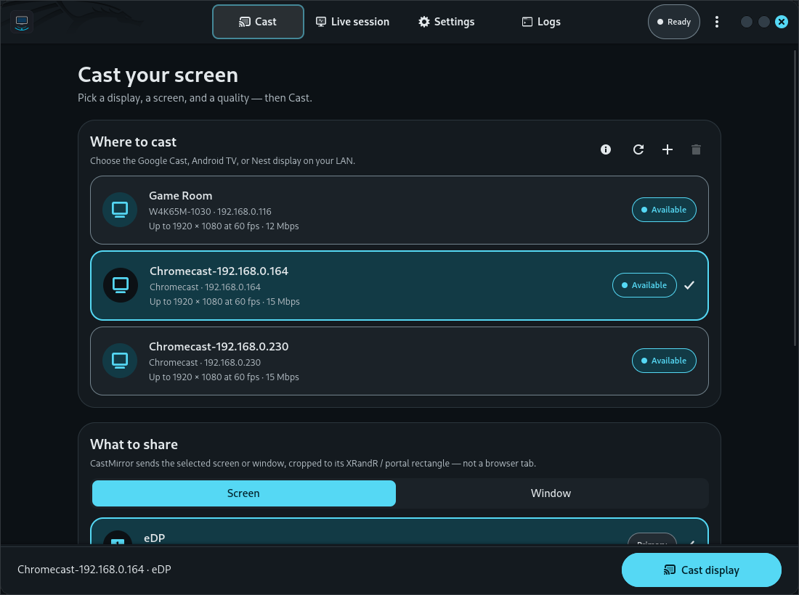
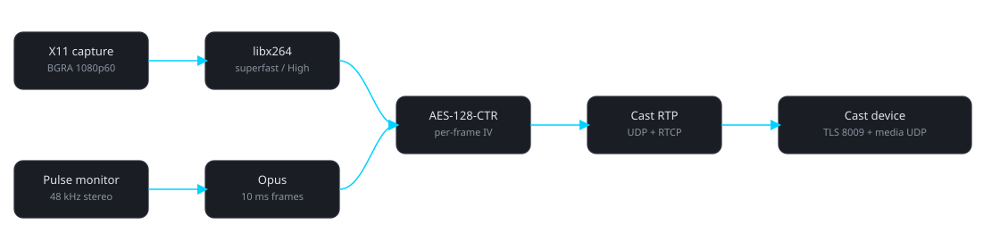

One-Click Cast & Discovery
Continuous mDNS detection for Chromecast dongles, Google TV Streamer, and Cast TVs. Recognizes device models with custom glyphs or connects to custom IPs.
CastMirror is a high-performance native sender that discovers Cast devices on your LAN, captures the Linux desktop or individual application windows with system audio, and streams H.264 + Opus over the native Cast RTP/RTCP media path.

Capabilities
CastMirror operates directly at the Cast V2 protocol level — speaking the same RTP/RTCP and TLS channels Chrome uses, without running a web browser.
Continuous mDNS detection for Chromecast dongles, Google TV Streamer, and Cast TVs. Recognizes device models with custom glyphs or connects to custom IPs.
Mirror an entire monitor or stream a single window. Features X11 XComposite redirection for occluded windows and Wayland portal picker integration.
Live session telemetry with hardware-accelerated Cairo Bézier mini-charts tracking FPS, bitrate, round-trip time (RTT), and packet loss in real time.
Freeze display sharing and mute TV audio on the fly without terminating the session, injecting clean silence frames to maintain audio sync.
Always-on 8-rung ladder controller holds your target bitrate ceiling (1–25 Mbps), drops during network congestion, and aggressively recovers once clear.
Integrated self-test diagnostic wizard tests capturers, encoders, audio, and network sockets. Includes Light, Dark, and System default themes.
Architecture
Target playout delay is ~200 ms. Desktop pixels and PulseAudio/PipeWire monitor audio are encoded into zero-latency elementary streams, encrypted with session AES-128-CTR, and packetized into Cast RTP over UDP.

Hardware Matrix
Tested across physical Google Cast devices. Nest Hub devices are 720p-class.
Documentation
All project documentation open on the website, migrated directly from the source repository.
Linux is the primary supported platform. You need a modern C++20 compiler (GCC 11+ or Clang 14+), CMake 3.20+, Ninja, and developer libraries for GTK 4, Libadwaita, FFmpeg, and PulseAudio.
sudo apt update sudo apt install -y build-essential cmake ninja-build pkg-config protobuf-compiler libprotobuf-dev libssl-dev libopus-dev libpulse-dev libx11-dev libxext-dev libxrandr-dev libxfixes-dev libxcomposite-dev libxdamage-dev libva-dev libavcodec-dev libswscale-dev libavutil-dev nlohmann-json3-dev libgtest-dev libgtk-4-dev libadwaita-1-dev
libxcomposite-dev and libxdamage-dev enable occluded-window capture and damage tracking for X11 window sharing.
cmake -S . -B build -G Ninja -DCMAKE_BUILD_TYPE=Release cmake --build build -j"12"
| Binary Path | Component Role |
|---|---|
build/app/castmirror-gui | Modern GTK 4 + Libadwaita desktop graphical application |
build/app/castmirror | Interactive and non-interactive command-line interface |
build/tests/castmirror_tests | Full Google Test test suite (87 tests) |
build/tools/poc-* | Protocol, encoding, and transport benchmark tools |
build/tools/fake-receiver | Automated simulated Cast receiver for local loopback verification |
# Launch the GTK 4 desktop app ./build/app/castmirror-gui # Cast a full monitor via CLI ./build/app/castmirror --device 192.168.0.164 --display 0 --preset High # List available application windows, then mirror one ./build/app/castmirror --list-windows ./build/app/castmirror --device 192.168.0.164 --window 0x2400004 # Cast display without mirroring system audio ./build/app/castmirror --device 192.168.0.164 --no-audio
CASTMIRROR_FORCE_SOFTWARE_ENCODE=1: Force FFmpeg libx264 software encoding even when VAAPI GPU acceleration is available.CASTMIRROR_FORCE_X11=1: Force X11 display capture instead of the PipeWire portal when running under a Wayland compositor via XWayland.Control traffic uses TCP 8009 (TLS) to the receiver. Media streams use UDP to the ephemeral port returned in the ANSWER. Both devices must be on the same local subnet. Helper script: scripts/setup_firewall.sh.
CastMirror is structured as a modular C++20 engine (castcore) with a decoupled GTK 4 + Libadwaita GUI (app/gui) and CLI (app/cli).
targetDelay: 200.GpuProcessor (letterbox scaling, direct YUV420P/NV12 plane write) → Hardware VAAPI / libx264 encoder (0 B-frames, zerolatency) → Annex-B NALUs → FrameCrypto (AES-128-CTR) → RtpPacketizer (Cast RTP) → Paced UDP socket.FrameCrypto → RtpPacketizer → UDP. Host audio sink is muted during streaming and restored on Stop.All subsystems coordinate strictly through an explicit thread-safe state machine:
Idle → Discovering → Ready → Connecting → Negotiating → Streaming ↔ Reconnecting → Stopping → Idle (Failed state transitions gracefully back to Idle or Reconnecting)
| Module | Responsibilities |
|---|---|
DeviceDiscovery | mDNS _googlecast._tcp browsing + local subnet TCP port 8009 scan |
CastChannel | TLS 1.2/1.3 Cast V2 socket on port 8009, Protobuf packet framing, PING/PONG heartbeats |
MirroringNegotiator | Firmware app launch (0F5096E8), JSON OFFER/ANSWER generation, AES key negotiation |
IDisplayCapture | Modular X11 (MIT-SHM, XComposite, XDamage, XFixes) and Wayland (PipeWire portal) backends |
IAudioCapture | PulseAudio loopback monitor sink with automatic host speaker muting and restoration |
IVideoEncoder | Hardware VAAPI (h264_vaapi) with automatic fallback to FFmpeg libx264 |
CastTransport | UDP Cast RTP packetization, pacing token bucket, RTCP feedback parser, duplicate NACK suppression |
AdaptiveController | 8-rung dynamic adaptation ladder tracking packet loss, RTT, and jitter |
CastMirror classifies receivers using mDNS capability bitmasks (ca) and model identifiers (md), verified against the receiver's negotiation ANSWER.
| Device Model | Model String (md) | H.264 Profile | Max Resolution & FPS | Playout Delay |
|---|---|---|---|---|
| Chromecast (1st/2nd Gen) | Chromecast / NC2-6A5 | Level 4.1 | 1080p30, 720p60 | 400 ms |
| Chromecast (3rd Gen) | GA00439 | Level 4.2 | 1080p60, 720p60 | 200 - 400 ms |
| Chromecast Ultra | NC2-6A5-D | Level 5.1 | 4K30, 1080p60 | 200 - 400 ms |
| Chromecast with Google TV (HD) | G454V | Level 4.2 | 1080p60, 720p60 | 200 - 400 ms |
| Chromecast with Google TV (4K) | GZRNL | Level 5.1 | 4K60 (VP9), 4K30 (H.264), 1080p60 | 200 - 400 ms |
| Google TV Streamer (4K) | GR1XN | Level 5.2 | 4K60, 1080p60 | 200 - 400 ms |
| Google Nest Hub (1st/2nd Gen) | Google Nest Hub | Level 3.1 | 720p60, 720p30 (720p-class) | 400 ms |
| Cast TVs (Sony, Vizio, Philips) | Cast TV | Level 4.2 | 1080p60, 720p60 | 200 - 400 ms |
| Rung | Resolution | FPS | Target Bitrate | Trigger Condition |
|---|---|---|---|---|
| 0 (Ultra 4K) | 3840 × 2160 | 60 | 25.0 Mbps | 4K device, 0% loss, RTT < 20 ms |
| 1 (4K Standard) | 3840 × 2160 | 30 | 18.0 Mbps | 4K device, loss < 1%, RTT < 35 ms |
| 2 (1440p High) | 2560 × 1440 | 60 | 12.0 Mbps | 1440p+ device, loss < 1.5% |
| 3 (1080p60 Max) | 1920 × 1080 | 60 | 8.0 Mbps | Gen3 / Ultra / Google TV, loss < 2% |
| 4 (1080p30 Default) | 1920 × 1080 | 30 | 5.0 Mbps | Default baseline for all video receivers |
| 5 (720p60 Smooth) | 1280 × 720 | 60 | 4.0 Mbps | Loss 2% – 5%, RTT > 60 ms |
| 6 (720p30 Resilient) | 1280 × 720 | 30 | 2.5 Mbps | Loss 5% – 10%, RTT > 90 ms |
| 7 (540p30 Emergency) | 960 × 540 | 30 | 1.2 Mbps | Loss > 10%, RTT > 150 ms |
Google Cast screen mirroring uses a specialized real-time media protocol (not WebRTC ICE/DTLS and not HLS media playback).
CastMessage.urn:x-cast:com.google.cast.tp.connection — Virtual sender/receiver session bindings.urn:x-cast:com.google.cast.tp.heartbeat — PING / PONG keepalive packets (5-second cadence).urn:x-cast:com.google.cast.receiver — LAUNCH, STOP, and GET_STATUS requests.urn:x-cast:com.google.cast.webrtc — JSON OFFER / ANSWER session negotiation.0F5096E8 (audio + video display mirroring) or 85CDB22F (audio-only).rtpProfile: "cast" with a custom 7-byte Cast RTP header extension:
Byte 0: Flags (Keyframe marker, Reference frame present) Bytes 1-2: Frame ID (monotonically increasing 16-bit integer) Bytes 3-4: Packet ID (packet index within frame) Bytes 5-6: Max Packet ID (total packet count - 1)
frame_id with the IV mask.CastMirror undergoes rigorous automated verification including unit tests, integration suites, synthetic network impairments, and simulated receiver loopback.
| Test Category | Test Count | Status | Coverage |
|---|---|---|---|
| State Machine & Reconnection | 6 tests | Passed | State transitions, callback notifications, retry limits |
| Config Store & Migrations | 8 tests | Passed | v1 → v2 → v3 migration, persistence, round-trip serialization |
| Capability & Device Matching | 4 tests | Passed | mDNS TXT parsing, hardware classification, resolution bounds |
| OFFER / ANSWER Negotiation | 4 tests | Passed | JSON schemas, custom bitrates, status queries |
| AES-128-CTR Cryptography | 2 tests | Passed | Roundtrip encryption/decryption, per-frame ciphertext variance |
| RTP Packetization & RTCP Parser | 5 tests | Passed | 7-byte Cast header, MTU slicing, checkpoint expansion |
| Adaptive Controller Ladder | 14 tests | Passed | Loss downshifts, RTT jitter delay scaling, bitrate ramp-up |
| Video & Audio Encoders | 8 tests | Passed | VAAPI hardware, libx264 multi-slice, Opus 10ms cadence |
| Display & Window Capture | 10 tests | Passed | XRandR, XComposite occluded window capture, DMA-BUF metadata |
| UDP Transport & Pacing | 5 tests | Passed | Token bucket rate limiter, duplicate NACK suppression |
| Session Recovery & Source Selection | 15 tests | Passed | Window geometry tracking, synthetic source fallback, 30s timeout |
| End-to-End Receiver Simulation | 6 tests | Passed | Full TLS + OFFER/ANSWER + media streaming + hard Stop |
| Metric | Target Budget | Measured Result | Verdict |
|---|---|---|---|
| 1080p60 Video Encode Latency | ≤ 16.6 ms | 9.75 – 12.48 ms | PASSED |
| Session Teardown & Stop Latency | ≤ 500 ms | 93.6 – 121.6 ms | PASSED |
| Session Connect to Streaming | ≤ 8.0 s | < 100 ms (local) | PASSED |
| CPU Utilization (1080p60 HW) | < 15% 1 core | < 8% | PASSED |